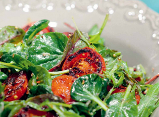

Назад
Салат с обжаренными томатами
Быстро

30 мин

2 порции

30 мин
2 порции
Ингридиенты:
Помидоры - 400 г
Смесь салатных листьев
- 75 г
Чеснок
- 1 зубчик
Натуральный йогурт
- 200 мл
Оливковое масло
- 55 мл
Соль
- по вкусу
Молотый черный перец
- по вкусу
Пошаговый рецепт
- Подготовьте продукты по списку.
- Помидоры среднего размера нарезать кольцами толщиной около сантиметра. Разогреть сковороду, влить чуть-чуть оливкового масла и обжарить ломтики томатов до появления корочки, а затем снять с огня.
- Смешать натуральный йогурт с 50 мл оливкового масла. Зубчик чеснока раздавить ножом, разобрать на волокна и мелко нарезать. Добавить нарубленный чеснок к йогурту с маслом, посолить и поперчить по вкусу.
- Заправить получившимся соусом смесь салатных листьев, украсить кольцами обжаренных томатов и подавать, когда они чуть остынут — или еще горячими, это уже дело вкуса.